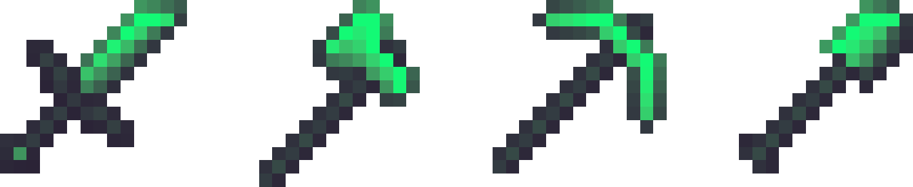

«
Surge is a light-weight PVP texturepack that is defined by its strong edges. It does not alter blocks, which makes suitable for survival and creative building. Surge was originally developed by Wisp, but it was further updated by Gelebeer member Trijngund. Surge has a prominent role in the gelebeer communtiy, and was even used by Technoblade in several of his older videos.
OverClay is an Hypixel Pixel Party overlay texturepack developed by Trijngund. This overlay makes a clearer distuingishment between block colours. This results in an overall more pleasant gameplay experience.